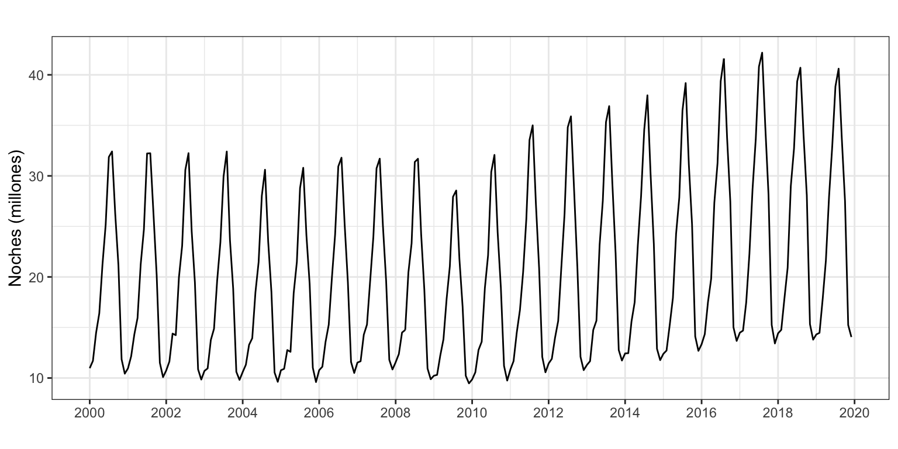
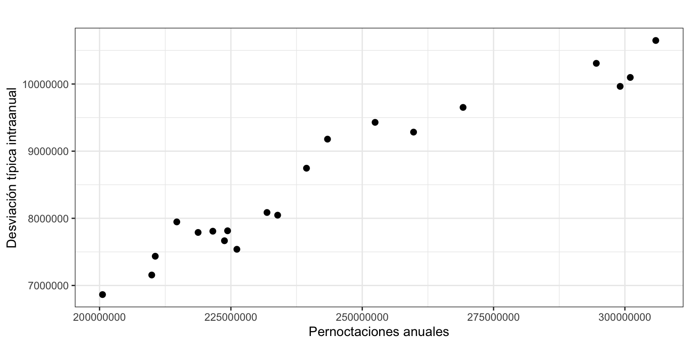
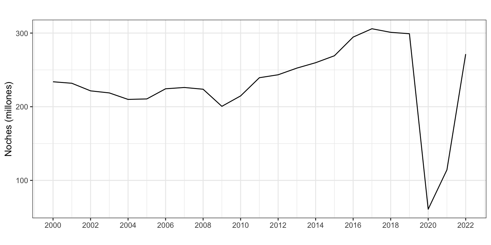
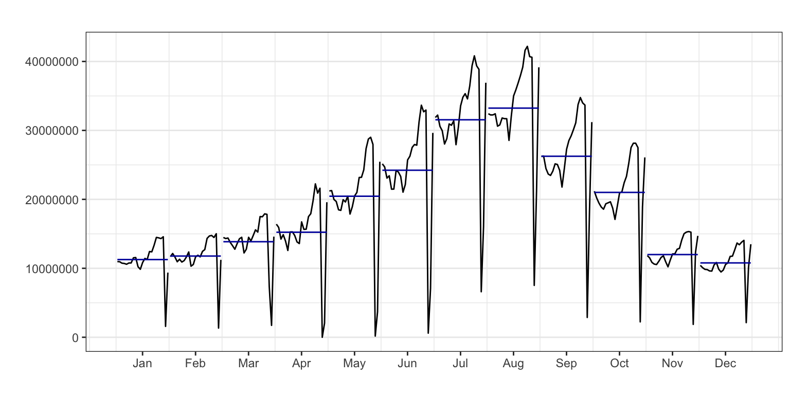
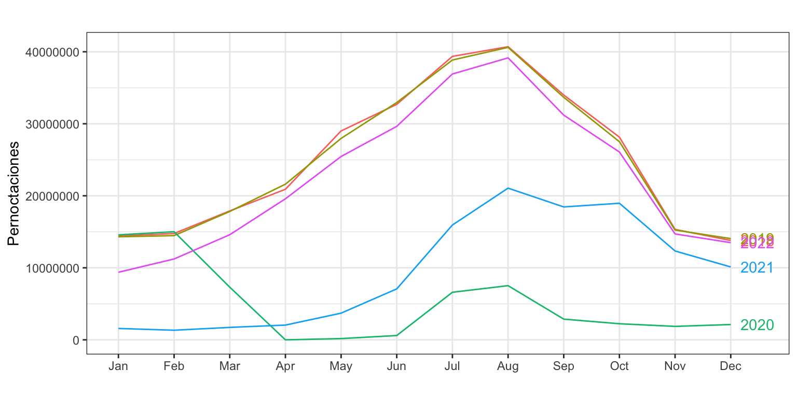
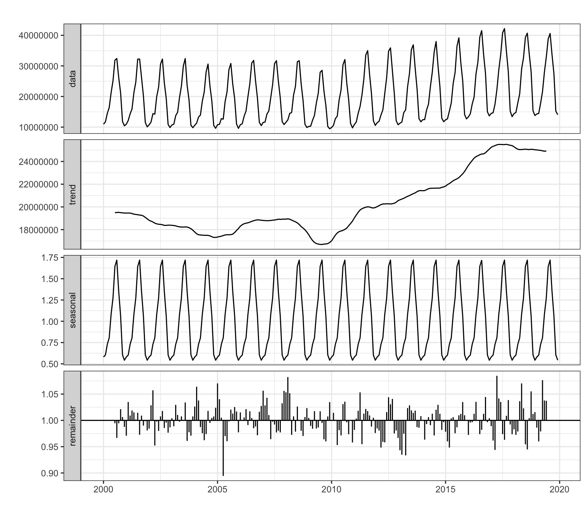
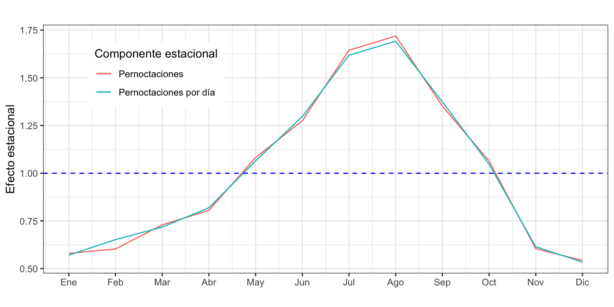
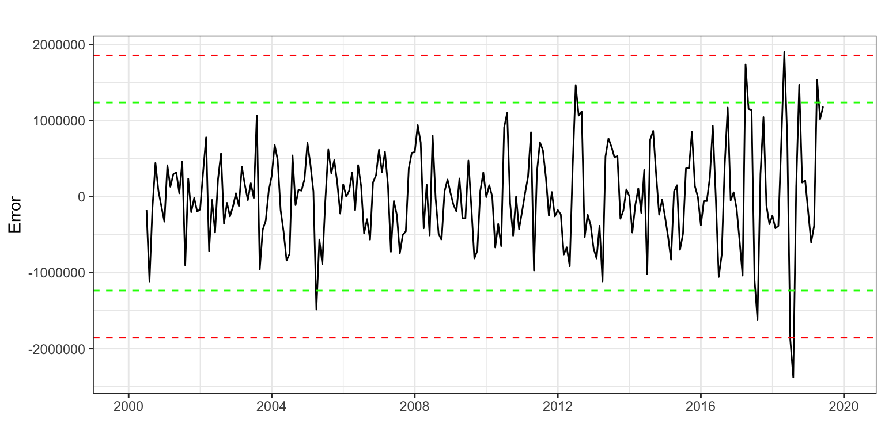

Pernoctaciones <- read.csv2("./series/Pernoctaciones.csv",
header = TRUE)
Pernoctaciones <- ts(Pernoctaciones[,2],
start = 2000,
freq = 12)Pernoctaciones en alojamientos turísticos de turistas extranjeros
Descriptiva
1 Introducción
Vamos a considerar la serie temporal correspondiente al número de pernoctaciones que los turistas extranjeros realizan en España en alojamientos turísticos autorizados (que llamaremos Pernoctaciones en adelante). Esta serie está disponible en Eurostat desde enero de 2000 hasta diciembre de 2022, un total de 23 años y 276 observaciones.
La serie y su fechado están en el fichero “Pernoctaciones.csv”.
2 Análisis preliminar gráfico
La gráfica de la serie temporal (Figura 1) muestra una tendencia suavemente decreciente en el número de pernoctaciones en la primera década del presente siglo. Con el cambio de década se produce un cambio en la tendencia, que pasa a ser creciente. A finales de la década pasada se observa una caída en el número de pernoctaciones y en los últimos años el efecto de la Covid-19 y posterior recuperación.
Las líneas verticales de la Figura 1 marcan los meses de enero de cada año y permiten identificar mejor la posible componente estacional. Las pernoctaciones aumentan notablemente en verano, especialmente en Julio y Agosto, asociadas a las vacaciones estivales. En menor medida se observa el efecto de la Semana Santa. Más adelante haremos un análisis detallado de la estacionalidad.
autoplot(Pernoctaciones/1000000,
xlab = "",
ylab = "Noches (millones)",
main = "") +
scale_x_continuous(breaks= seq(2000, 2022, 2)) 
Parece que conforme disminuye el número pernoctaciones, también disminuye la amplitud estacional. Al inicio del siglo la diferencia entre los meses con más y con menos pernoctaciones superaba los 22 millones de pernoctaciones, mientras que a finales de la segunda década esta diferencia llegaba a los 27 millones de pernoctaciones. Parece, por tanto, que estamos ante un esquema multiplicativo. Para confirmar este aspecto, se ha realizado un gráfico de puntos entre el numero anual de pernoctaciones y la desviación típica intraanual (Figura 2), eliminando los datos de los últimos tres años.
CasosAnual <- aggregate(window(Pernoctaciones, end = c(2019, 12)), FUN = sum)
DesviacionAnual <- aggregate(window(Pernoctaciones, end = c(2019, 12)), FUN = sd)
ggplot() +
geom_point(aes(x = CasosAnual, y = DesviacionAnual), size = 2) +
xlab("Pernoctaciones anuales") +
ylab("Desviación típica intraanual") +
ggtitle("") 
Efectivamente, los años con mayor número de pernoctaciones se corresponden con una mayor variabilidad intraanual, por lo que confirmamos el esquema multiplicativo de la serie.
3 Análisis de las componentes
3.1 Tendencia
Hemos obtenido la serie anual pernoctaciones, que presentamos en la Figura 3. Se confirma la tendencia decreciente de la primera década, aunque con un comportamiento muy irregular. En el año 2000 el número de pernoctaciones alcanzaba los 234 millones al año, mientras que en 2009 se redujo a 200 millones. En los años siguientes se produce una recuperación de las pernoctaciones (a pesar de la crisis económica), superando rápidamente los niveles de principios de siglo y alcanzado a finales de la segunda década los 300 millones de pernoctaciones. La Covid-19 produjo en los años 2020 y 2021 una caída en las pernoctaciones sin precedentes, aunque en 2022 casi se ha alcanzado el nivel pre-Covid.
autoplot(aggregate(Pernoctaciones, FUN = sum)/1000000,
xlab = "",
ylab = "Noches (millones)",
main = "") +
scale_x_continuous(breaks= seq(2000, 2022, 2)) 
3.2 Estacionalidad
Veamos ahora como varían las pernoctaciones de los turistas extranjeros en España según el mes del año.
ggmonthplot(Pernoctaciones,
xlab = "",
ylab = "",
main = "") +
guides(colour=FALSE)
Cada subserie en la Figura 4 vuelve a mostrar la evolución de la tendencia durante el periodo de análisis. Respecto de la estacionalidad, se aprecia que el principal determinante es la temperatura –y los movimientos vacacionales asociados a ella– puesto que el número de pernoctaciones aumenta progresivamente desde enero a agosto para luego caer bruscamente de septiembre a diciembre. También cabría esperar un efecto días del mes y observar más pernoctaciones en los meses de 31 días que en los de 30, pero el efecto de la temperatura es tan dominante que anula cualquier otro efecto.
3.3 Efecto Covid-19
Podemos usar el gráfico de líneas por año para analizar visualmente el impacto de la pandemia por la Covid-19 en el número de pernoctaciones. A fin de tener una mejor visualización, este análisis se hará desde el año 2018.
ggseasonplot(window(Pernoctaciones, start = c(2018, 1)),
year.labels=TRUE,
xlab = "",
ylab = "Pernoctaciones",
main = "") +
guides(colour=FALSE)
La Figura 5 muestra la fuerte caída en las pernoctaciones desde marzo de 2020 causada por la restricciones de movilidad implementadas para atenuar los efectos de la pandemia. A partir de verano de 2021 se observa una gradual recuperación en el número de pernoctaciones, y en 2022 estas casi alcanzaron el nivel prepandemia.
4 Descomposición
Vamos a obtener cada una de las componentes de la serie usando el método de medias móviles decompose. Se ha optado por este método dado que la serie muestra un esquema multiplicativo. De nuevo, para este análisis consideraremos la serie hasta diciembre de 2019.
PernoctacionesDesMul <- decompose(window(Pernoctaciones, end = c(2019, 12)),
type = "mult")
autoplot(PernoctacionesDesMul,
xlab = "",
main = "")
La tendencia obtenida tras la descomposición no hace sino confirmar lo ya observado, una tendencia decreciente en la primera década, y creciente desde entonces hasta los dos últimos años.
También se aprecian muy claramente varios valores atípicos en el residuo, destacando uno en el año 2005.
Respecto de la componente estacional, se confirma el análisis preliminar: mayor número de pernoctaciones a finales de primavera y verano, especialmente en agosto, y un menor número en invierno, especialmente en diciembre –un mes en que la gente no realiza tantos viajes al extranjero. En concreto, en agosto se detecta un 72% más de pernoctaciones respecto de la media anual y en julio un 64% más. Por contra, de noviembre a febrero se observa un descenso superior o igual al 40%.
round(PernoctacionesDesMul$figure, 2) [1] 0.58 0.60 0.73 0.81 1.08 1.28 1.64 1.72 1.35 1.06 0.60 0.54A fin de aislar de la componente estacional el efecto días del mes del efecto de la temperatura, se ha aplicado la descomposición a la serie pernoctaciones por día resultante de dividir la serie original por el número de días del mes (que obtenemos con la función monthdays). En esta nueva serie todo el efecto estacional se deberá a la temperatura.
La Figura 7 muestra que la componente estacional estimada para las pernoctaciones por día es solo algo más suave que la componente obtenida a partir la serie original. También se aprecia que el efecto del tamaño del mes es muy acusado en febrero. Para este mes el efecto estacional es el resultado de dos fuerzas en la misma dirección, ser un mes frío y un mes con 28 días, que decrementan la componente estacional. Sobre la serie original ambas fuerzas tienen lugar y el resultado es una componente estacional para febrero similar a la de enero y mucho menor que la de marzo. En la serie de pernoctaciones por día el efecto número de días del mes ha sido eliminado, solo queda el efecto temperatura que sitúa a febrero entre los meses de enero y marzo.
PernoctacionesDiaDesMul <- decompose(window(Pernoctaciones/monthdays(Pernoctaciones), end = c(2019, 12)),
type = "mult")
ggplot() +
geom_line(aes(x = 1:12, y = PernoctacionesDesMul$figure, colour = "black")) +
geom_line(aes(x = 1:12, y = PernoctacionesDiaDesMul$figure, colour = "red")) +
geom_hline(yintercept = 1, colour = "blue", lty = 2) +
ggtitle("") +
xlab("") +
ylab("Efecto estacional") +
scale_x_continuous(breaks= 1:12,
labels = c("Ene", "Feb", "Mar", "Abr", "May", "Jun",
"Jul", "Ago", "Sep", "Oct", "Nov", "Dic")) +
scale_color_discrete(name = "Componente estacional",
labels = c("Pernoctaciones", "Pernoctaciones por día")) +
theme(legend.position=c(0.2,0.8))
5 Identificación de meses atípicos
En la descomposición, el vector de residuos contiene las componentes del error y la intervención. Vamos a realizar un análisis gráfico informal del residuo que nos permite ir identificando posibles intervenciones, más allá de la evidente por la Covid-19.
Como la descomposición es multiplicativa, el error es en tanto por uno y tiene media 1. Para analizar las propiedades del residuo, vamos calcular el logaritmo del error.
La Figura 8 muestra el error y los intervalos de confianza (IC) al 95% (líneas en verde) y al 99.7% (líneas en rojo). Se observa un valor extremo que cruza el IC(99.7%) en abril de 2005 (ese año la Semana Santa cayó en marzo). También se observan otros valores potencialmente atípicos en los que el error supera las 2.5 desviaciones típicas: febrero de 2008 y abril de 2017.
error <- log(remainder(PernoctacionesDesMul))
sderror <- sd(error, na.rm = TRUE)
autoplot(error,
xlab = "",
ylab = "Error",
main = "",
colour = "black") +
geom_hline(yintercept = c(3, 2, -2, -3)*sderror,
colour = c("red", "green", "green", "red"),
lty = 2) +
scale_x_continuous(breaks= seq(1980, 2020, 4))
# abs(error) > 3 * sderror